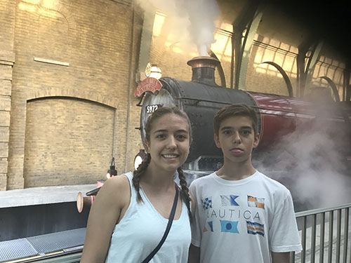

Ever since she began reading the first Harry Potter book in her youth, Catalina has had a healthy obsession with The Boy Who Lived. Depite reading the books over and over, binge watching the movies with her best friend all the time, and visiting Harry Potter World at Universal Studios in Orlando, she simply cannot get enough Harry Potter.
Catalina enjoys scrolling through pages of Harry Potter memes on Instagram whenever she gets the chance. Without a doubt, this series is her absolute favorite. Her favorite character in the well known books is Hermione Granger, a girl she is similar to in many respects. Hermione is known for her brilliance and good heart, and loved despite being somewhat socially awkward; Catalina is like this as well.
Along with many others around the world, Catalina and her best friend enjoy celebrating Harry Potter’s birthday every year on July 31st. Whenever she has extra time to read a book for fun, she often finds herself once again indulging in the greatness that is Harry Potter.
During her Spring Break in 2018, she and her family took a trip to the famed Harry Potter world in Universal Orlando. Like thousands of other spring-breakers and Harry Potter entusiasts, they enjoyed walking through Hogwarts, Hogsmeade, and Diagon Alley, riding the Hogwarts Express, and drinking butterbeer. During their time, they escaped from Gringotts Bank and also rode a Hippogriff, much like Buckbeak, the beloved beast from the Prisoner of Azkaban. The following pictures are from the vacation she and her family went on.